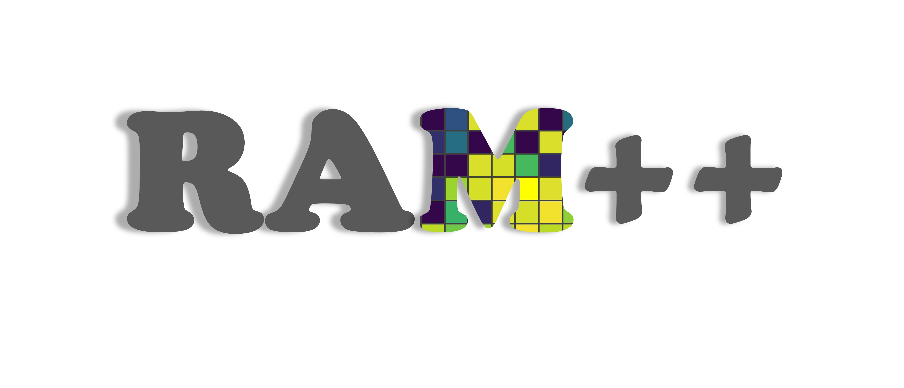
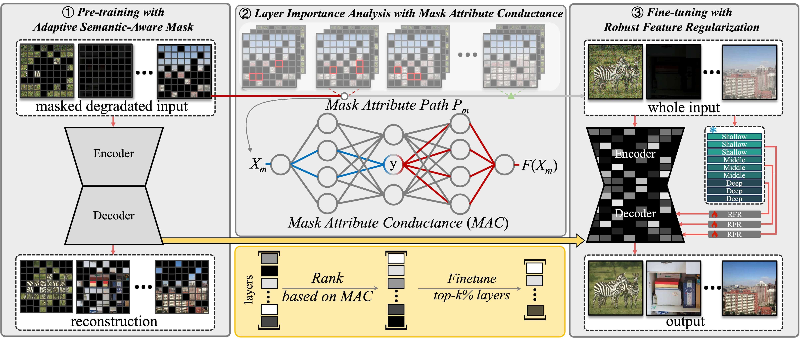
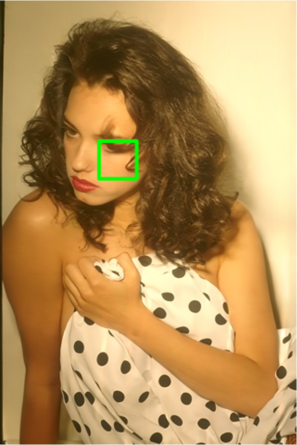
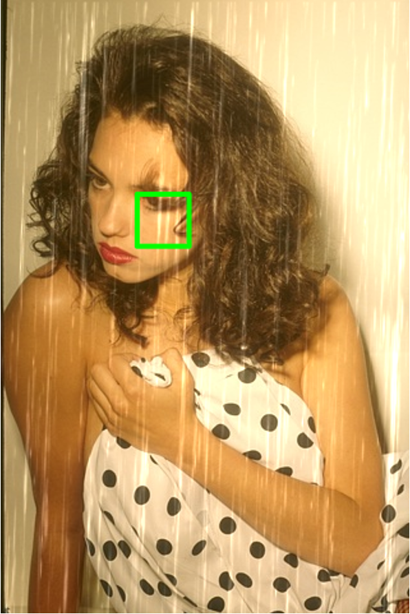
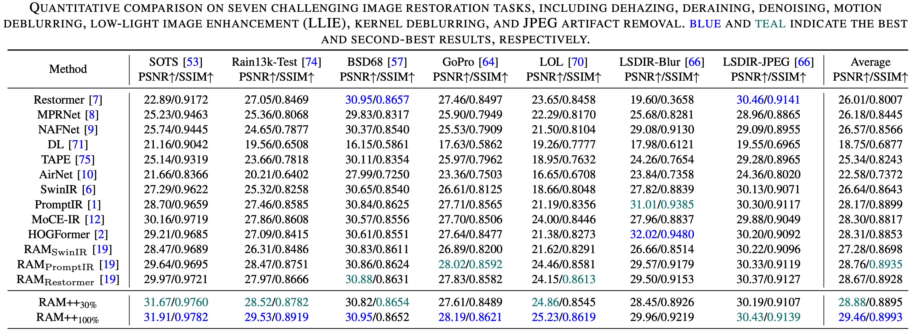

<!DOCTYPE html>
<html>
<head>
  <meta charset="utf-8">
  <!-- Meta tags for social media banners -->
  <meta name="description" content="DESCRIPTION META TAG">
  <meta property="og:title" content="SOCIAL MEDIA TITLE TAG"/>
  <meta property="og:description" content="SOCIAL MEDIA DESCRIPTION TAG"/>
  <meta property="og:url" content="URL OF THE WEBSITE"/>
  <meta property="og:image" content="static/image/your_banner_image.png" />
  <meta property="og:image:width" content="1200"/>
  <meta property="og:image:height" content="630"/>


  <meta name="twitter:title" content="TWITTER BANNER TITLE META TAG">
  <meta name="twitter:description" content="TWITTER BANNER DESCRIPTION META TAG">
  <meta name="twitter:image" content="static/images/your_twitter_banner_image.png">
  <meta name="twitter:card" content="summary_large_image">
  <meta name="keywords" content="KEYWORDS SHOULD BE PLACED HERE">
  <meta name="viewport" content="width=device-width, initial-scale=1">

  <title>RAM++</title>
  <link rel="icon" type="image/x-icon" href="static/images/favicon.ico">
  <link href="https://fonts.googleapis.com/css?family=Google+Sans|Noto+Sans|Castoro" rel="stylesheet">
  <!-- External CSS -->
  <link rel="stylesheet" href="static/css/bulma.min.css">
  <link rel="stylesheet" href="static/css/bulma-carousel.min.css">
  <link rel="stylesheet" href="static/css/bulma-slider.min.css">
  <link rel="stylesheet" href="static/css/fontawesome.all.min.css">
  <link rel="stylesheet" href="https://cdn.jsdelivr.net/gh/jpswalsh/academicons@1/css/academicons.min.css">
  <link rel="stylesheet" href="static/css/index.css">
  <link rel="stylesheet" href="static/css/image-comparison.css">
  <link rel="stylesheet" href="static/css/quantitative-comparasion.css">

  <!-- External JS -->
  <script src="https://ajax.googleapis.com/ajax/libs/jquery/3.5.1/jquery.min.js"></script>
  <script src="https://documentcloud.adobe.com/view-sdk/main.js"></script>
  <script src="static/js/image-comparison.js"></script>
  <script defer src="static/js/fontawesome.all.min.js"></script>
  <script src="static/js/bulma-carousel.min.js"></script>
  <script src="static/js/bulma-slider.min.js"></script>
  <script src="static/js/index.js"></script>
  <script src="static/js/quantitative-comparasion.js"></script>
  
  <!-- MathJax Config and Script -->
  <script>
    MathJax = {
      tex: {
        inlineMath: [['$', '$'], ['\\(', '\\)']],
        displayMath: [['$$', '$$'], ['\\[', '\\]']],
        // 设置数学公式字体大小
        // MathJax 本身没有 fontSize 配置，建议使用 CSS 进行调整
      },
      chtml: {
        scale: 0.9  // 控制公式的整体缩放
      }
    };
  </script>
  
  <script src="https://cdn.jsdelivr.net/npm/mathjax@3/es5/tex-mml-chtml.js"></script>
  
</head>
<body>
  <!-- Page content goes here -->
</body>
</html>


<section class="hero">
  <div class="hero-body">
    <div class="container is-max-desktop">
      <div class="columns is-centered">
        <div class="column has-text-centered">
          <center></center>
          <h1 class="title is-1 publication-title"><span style="color: #c9dd22;">R</span>obust
            Representation Learning via
            <span style="color: #c9dd22;">A</span>daptive  <span style="color: #c9dd22;">M</span>ask for All-in-One Image Restoration</h1>
          <div class="is-size-5 publication-authors">
            <!-- Paper authors -->
            <span class="author-block">
              <a href="https://github.com/Zilong-Zhang003" target="_blank">Zilong Zhang<sup>*,1</sup></a>,</span>
            <span class="author-block">
              <a href="https://github.com/DragonisCV" target="_blank">Chujie Qin<sup>*,1</sup></a>,</span>
            <span class="author-block">
              <a href="https://mmcheng.net/clguo/" target="_blank">Chunle Guo<sup>1</sup></a>,</span>
            <span class="author-block">Yong Zhang<sup>2,1</sup>,</span>
            <span class="author-block">Chao Xue<sup>3</sup>,</span>
            <span class="author-block">
              <a href="https://mmcheng.net/cmm/" target="_blank">Ming-Ming Cheng<sup>1</sup></a>,</span>
            <span class="author-block">
              <a href="https://li-chongyi.github.io/" target="_blank">Chongyi Li<sup>†,1</sup></a></span>
          
            <div class="is-size-5 publication-authors">
              <span class="author-block"><sup>1</sup>VPIC,CS, Nankai University,</span>
              <span class="author-block"><sup>2</sup>Chongqing Chang'an Wangjiang Industrial Group Co., Ltd,</span>
              <span class="author-block"><sup>3</sup>Tiandy Technologies,</span>
              <span class="eql-cntrb"><small><br><sup>*</sup>Equal contribution;<sup>†</sup>Corresponding author</small></span><br>
              <!-- <span class="author-block"> <big>CVPR2025</big> </span> -->
            </div>
          </div>
          <div class="column has-text-centered">
            <div class="publication-links">
              <!-- Arxiv PDF link -->
              <span class="link-block">
                <a href="https://arxiv.org/pdf/2509.12039" target="_blank"
                class="external-link button is-normal is-rounded is-dark">
                <span class="icon">
                  <i class="fas fa-file-pdf"></i>
                </span>
                <span>Paper</span>
              </a>
            </span>


          <!-- Github link -->
          <span class="link-block">
            <a href="https://github.com/DragonisCV/RAM" target="_blank"
            class="external-link button is-normal is-rounded is-dark">
            <span class="icon">
              <i class="fab fa-github"></i>
            </span>
            <span>Code</span>
          </a>
        </span>

        <!-- ArXiv abstract Link -->
        <span class="link-block">
          <a href="https://arxiv.org/abs/2509.12039" target="_blank"
          class="external-link button is-normal is-rounded is-dark">
          <span class="icon">
            <i class="ai ai-arxiv"></i>
          </span>
          <span>arXiv</span>
        </a>
      </span>

      <!-- Checkpoint Link -->
      <span class="link-block">
        <a href="https://huggingface.co/233zzl/RAM2.0_pretrained_models" target="_blank"
           class="external-link button is-normal is-rounded is-dark">
          <span class="icon">
            
          </span>
          <span>Models</span>              
        </a>
      </span>      
    </div>
  </div>
</div>
</div>
</div>
</div>
</section>


<!-- Paper abstract -->
  <section class="section hero is-light">
    <div class="container is-max-desktop">
      <div class="columns is-centered has-text-centered">
        <div class="column is-four-fifths">
          <h2 class="title is-3">Abstract</h2>
          <div class="content has-text-justified">
            <p class="custom-font-size">
                This work presents <span style="text-decoration: underline;">R</span>obust Representation Learning via 
                <span style="text-decoration: underline;">A</span>daptive 
                <span style="text-decoration: underline;">M</span>ask (RAM++), a two-stage framework for all-in-one image restoration. 
                RAM++ integrates high-level semantic understanding with low-level texture generation to achieve content-oriented robust restoration. 
                It addresses the limitations of existing degradation-oriented methods in extreme scenarios (e.g., degradations are strongly coupled with image structures). 
                RAM++ also mitigates common challenges such as unbalanced performance across tasks, overfitting to seen degradations, and weak generalization to unseen ones through three key designs:
              </p>
              
              <ol>
                <li class="custom-font-size">
                  <strong>Adaptive Semantic-Aware Mask (AdaSAM):</strong>
                  a pre-training strategy that applies pixel-level masks to semantically rich and textured regions.
                  This design enables the network to learn both generative priors and image content priors from various degradations.
                </li>
                <li class="custom-font-size">
                  <strong>Mask Attribute Conductance (MAC):</strong>
                  a selective fine-tuning strategy that adjusts the layers with higher contributions to bridge the integrity gap between masked pre-training and full-image fine-tuning, while retaining learned priors.
                </li >
                <li class="custom-font-size">
                  <strong>Robust Feature Regularization (RFR):</strong>
                  a strategy that leverages DINOv2’s semantically consistent and degradation-invariant representations, together with efficient feature fusion, to achieve faithful and semantically coherent restoration.
                </li>
              </ol>
              
              <p class="custom-font-size">
                With these designs, RAM++ achieves robust, well-balanced, and state-of-the-art performance across seen, unseen, extreme, and mixed degradations.
              </p>
              
          </div>
        </div>
      </div>
    </div>
  </section>
<!-- End paper abstract -->


<!-- Paper method -->
<section class="hero is-small">
  <div class="hero-body">
    <div class="container">
      <h2 class="title is-3">Method Overview</h2>
      <!-- <div id="results-carousel" class="carousel results-carousel"> -->
        <!-- <div class="item"> -->
          <!-- Your image here -->
          
          <h2 class="subtitle has-text-left">
            An illustration of our overall pipeline. 1) Pre-training the model with the Adaptive Semantic-Aware Mask image method tailored to low-level vision. We mask the degraded images’ semantically and texturally rich regions (\ie, high-information regions) at the pixel level with a $50\%$ masking ratio and reconstruct the clean images. 2) Fine-tuning is performed to bridge the input integrity gap that arises when transitioning from masked inputs during pre-training to full images during inference. We assess the contribution of each network layer to addressing this gap using the proposed MAC, ranking them in descending order. The top $k\%$ of layers are then selected for fine-tuning on complete images. 3) The fine-tuning process is further assisted by a pre-trained vision foundation model, providing semantic consistency and degradation-invariant priors</h2>
        <!-- </div> -->
      </div>
    </div>
  </div>
</section>
<!-- END Paper method -->

<!-- Image Comparison -->
<section class="hero is-small">
  <div class="hero-body">
      <div class="container">
        <h2 class="title is-3">Visual Comparison</h2>
        <div class="image-selector">
          <label for="imageSelector">Image Selector:</label>
          <select id="imageSelector">
              <option value="Derain">Derain</option>
              <option value="Dehaze">Dehaze</option>
              <option value="Denoise">Denoise</option>
              <option value="Motion Deblur">Motion Deblur</option>
              <option value="LLIE">LLIE</option>
              <option value="Kernel Deblur">Kernel Deblur</option>
              <option value="DeJPEG">DeJPEG</option>
              <option value="OOD Denoise">OOD Denoise</option>
          </select>
      </div>
  
      <div class="method-selector left-selector">
        <button class="method-button" data-image="2" data-method="LQ">LQ</button>
        <button class="method-button" data-image="2" data-method="AirNet">AirNet</button>
        <button class="method-button" data-image="2" data-method="NAFNET">NAFNET</button>
        <button class="method-button" data-image="2" data-method="MPRNet">MPRNet</button>
        <button class="method-button" data-image="2" data-method="TAPE">TAPE</button>
        <button class="method-button" data-image="2" data-method="SWINIR">SWINIR</button>
        <button class="method-button" data-image="2" data-method="Restormer">Restormer</button>
        <button class="method-button" data-image="2" data-method="MoCE-IR">MoCE-IR</button>
        <button class="method-button" data-image="2" data-method="HOGFormer">HOGFormer</button>
        <button class="method-button" data-image="2" data-method="RAM">RAM</button>
        <button class="method-button" data-image="2" data-method="Ours">Ours</button>
        <button class="method-button" data-image="2" data-method="GT">GT</button>
    </div>

    <div class="method-selector right-selector">
      <button class="method-button" data-image="1" data-method="LQ">LQ</button>
      <button class="method-button" data-image="1" data-method="AirNet">AirNet</button>
      <button class="method-button" data-image="1" data-method="NAFNET">NAFNET</button>
      <button class="method-button" data-image="1" data-method="MPRNet">MPRNet</button>
      <button class="method-button" data-image="1" data-method="TAPE">TAPE</button>
      <button class="method-button" data-image="1" data-method="SWINIR">SWINIR</button>
      <button class="method-button" data-image="1" data-method="Restormer">Restormer</button>
      <button class="method-button" data-image="1" data-method="MoCE-IR">MoCE-IR</button>
      <button class="method-button" data-image="1" data-method="HOGFormer">HOGFormer</button>
      <button class="method-button" data-image="1" data-method="RAM">RAM</button>
      <button class="method-button" data-image="1" data-method="Ours">Ours</button>
      <button class="method-button" data-image="2" data-method="GT">GT</button>
  </div>

    <div class="comparison-container">
        <div class="image-container">
            
        </div>
        <div id="image2-container">
            
        </div>
        <div class="slider">
            <div class="slider-button"></div>
        </div>
    </div>
      </div>
  </div>
</section>
<!-- End Image Comparison -->


<!-- quantitative -->
<section class="hero is-small">
  <div class="hero-body">
    <div class="container quant-section">
      <h2 class="title is-3">Quantitative Comparison</h2>
      <div class="quant-selector">
        <label for="quantitativeSelector">Task Selector:</label>
        <select id="quantitativeSelector">
          <option value="3-task">3-task</option>
          <option value="7-task">7-task</option>
          <option value="OOD (mixed)">OOD (mixed)</option>
          <option value="OOD (Denoise)">OOD (Denoise)</option>
          <option value="OOD (UIEB)">OOD (UIEB)</option>
        </select>
      </div>

      <div class="quantitative-container">
        
      </div>
    </div>
  </div>
</section>

 <!-- end quantitative -->
<!-- Teaser video-->


<section class="section" id="BibTeX">
  <div class="container">
    <h2 class="title is-3">BibTeX</h2>
    <pre><code>@misc{zhang2025ramrobustrepresentationlearning,
      title={RAM++: Robust Representation Learning via Adaptive Mask for All-in-One Image Restoration}, 
      author={Zilong Zhang and Chujie Qin and Chunle Guo and Yong Zhang and Chao Xue and Ming-Ming Cheng and Chongyi Li},
      year={2025},
      eprint={2509.12039},
      archivePrefix={arXiv},
      primaryClass={cs.CV},
      url={https://arxiv.org/abs/2509.12039}, 
}</code></pre>
  </div>
</section>


  <footer class="footer">
  <div class="container">
    <div class="columns is-centered">
      <div class="column is-8">
        <div class="content">

          <p>
            This page was built using the <a href="https://github.com/eliahuhorwitz/Academic-project-page-template" target="_blank">Academic Project Page Template</a> which was adopted from the <a href="https://nerfies.github.io" target="_blank">Nerfies</a> project page.
            You are free to borrow the source code of this website, we just ask that you link back to this page in the footer. <br> This website is licensed under a <a rel="license"  href="http://creativecommons.org/licenses/by-sa/4.0/" target="_blank">Creative
            Commons Attribution-ShareAlike 4.0 International License</a>.
          </p>

        </div>
      </div>
    </div>
  </div>
</footer>

<!-- Statcounter tracking code -->
  
<!-- You can add a tracker to track page visits by creating an account at statcounter.com -->

    <!-- End of Statcounter Code -->

  </body>
  </html>
